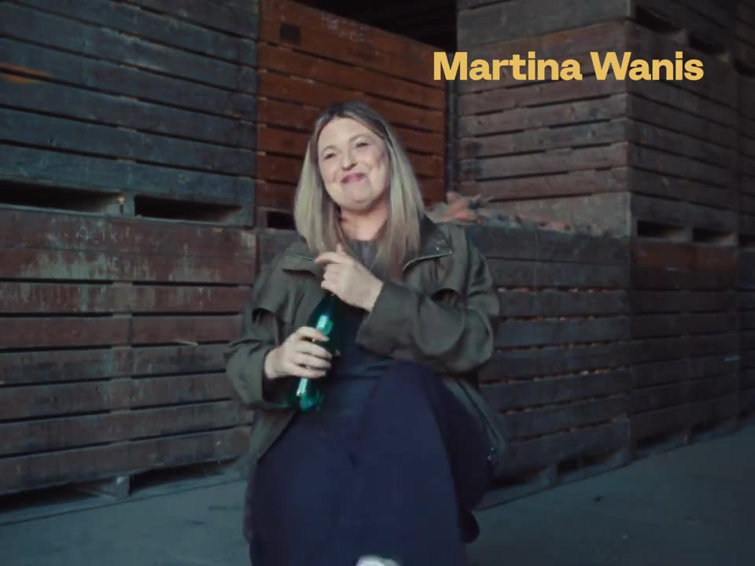
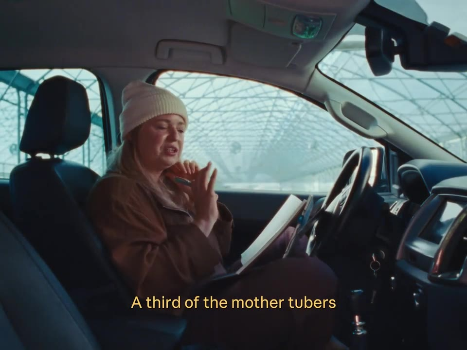
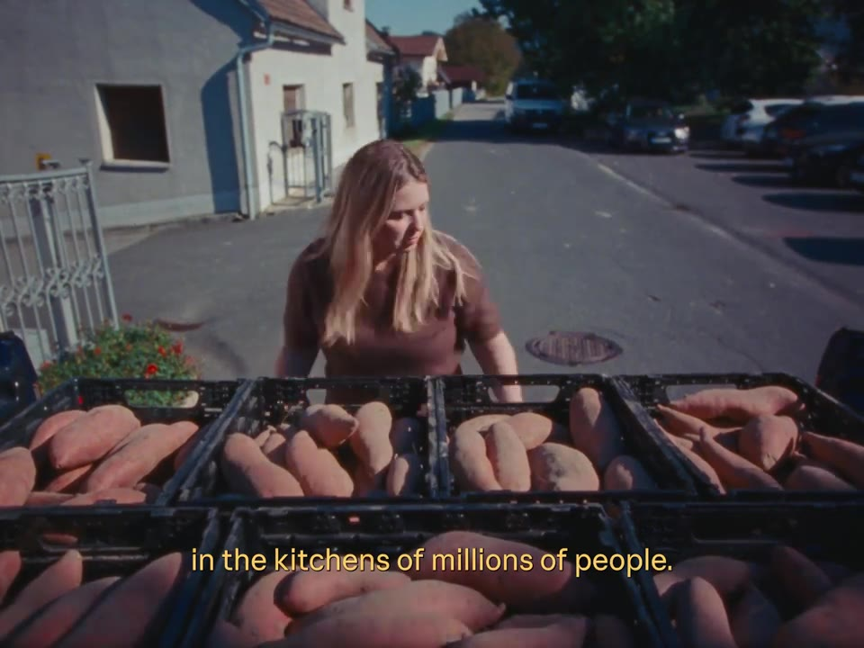

A season on the farm with AI
▶ 원본 영상 보기한눈에 보기
- 빈에서 자란 생물학자 마르티나 와니스가 슬로베니아 농장에서 고구마를 키우며 한 시즌 내내 Claude를 곁에 두고 썼다.
- 모종용 어미 고구마(mother tuber)의 3분의 1이 싹을 틔우지 않자, 사진을 Claude에 보내 조사 끝에 재배 프로토콜을 찾았다.
- 싹이 난 뒤에는 영양 결핍이 나타나 프로토콜을 다시 조정했다.
- 남편 얀이 모든 아이디어를 실행해야 해서 힘들어했고, 아이디어가 다 현실적이지는 않았다.
- 결과적으로 심는 재료(planting material)가 튼튼해 예년보다 일찍 수확했고, 본인 기준 "역대 최고 결과"를 냈다.
이런 분께 도움이 됩니다
- 농업·원예처럼 현장 문제를 AI와 함께 풀어 보려는 분.
- AI를 "시즌 내내 같이 일하는 파트너"로 쓴 실제 사례가 궁금한 분.
핵심 내용
배경: 왜 고구마였나
- 마르티나는 빈 출신 생물학자로, 사랑에 빠져 슬로베니아의 농장으로 왔다. 농장은 남편 얀의 집안이 수백 년 일군 곳이다.
- 고구마 재배는 마르티나의 아이디어였다. 슈퍼마켓 쪽에서는 "나쁜 생각이니 하지 말라"고 했지만 호기심에 시도했다.
- 처음 2년은 "재앙"이었고 가능한 실수를 다 했다. (0:59)
- 그때는 AI가 어떻게 작동하는지 깊이 이해하지 못한 상태에서 Claude를 쓰기 시작했다.

Claude와 함께한 한 시즌
🔁 시즌 중 문제 해결 과정
- 발아 실패 발견
- 사진 전송
- 프로토콜 조사
- 영양 결핍 발생
- 프로토콜 재조정
- 일찍 수확
- 1발아 실패 발견
어미 고구마의 3분의 1이 싹을 틔우지 않았다. (1:27)

차 안에서 어미 고구마 3분의 1 문제를 이야기하는 장면 · ▶ 1:34 - 2사진 전송
상태를 찍은 사진을 Claude에 보내 "어떻게 해야 하나"를 물었다.
- 3프로토콜 조사
Claude가 많은 조사를 거쳐 재배 프로토콜을 찾아냈다.
- 4영양 결핍 발생
식물이 자라기 시작했지만 영양분이 부족했다.
- 5프로토콜 재조정
전체 프로토콜을 다시 손봤다.
- 6일찍 수확
튼튼한 재료 덕에 예년보다 빨리 수확했다. (2:27)
💡 사진을 보내 묻고, 조사된 방법을 적용하고, 결과를 보고 다시 고치는 반복이 이 시즌의 핵심이었다.
협업의 마찰
- Claude와 마르티나 모두 아이디어가 많았고, 실제로 실행하는 사람은 남편 얀이었다.
- 얀은 가끔 마르티나와 Claude 때문에 짜증이 났다. 아이디어가 전부 현실적이지는 않았기 때문이다.
결과
- 올해 안착한 프로토콜은 효과가 좋아서 내년과 그 이후에도 쓸 계획이다.
- 심는 재료가 매우 튼튼해서 이전보다 훨씬 일찍 수확했다.
- 마르티나는 이번에 모든 것을 기록했고 "역대 최고 결과"라고 말한다. 수확물은 수백만 가정의 부엌으로 간다.

기억할 숫자·인용
- 발아하지 않은 어미 고구마: 약 3분의 1
- 기록한 수치: 12킬로그램 85그램 (무엇의 수확량인지는 자막상 불분명)
- "It was just me living through a season, and taking Claude along." — AI를 별도 프로젝트가 아니라 농사 일상에 동행시켰다는 말.
생각해볼 점
- 이 영상은 Claude 공식 채널의 홍보 성격이라, 성공 사례 중심이다. 구체적인 프로토콜 내용과 실패한 제안은 거의 나오지 않는다.
- "역대 최고"가 Claude 덕인지 프로토콜 조정, 날씨, 2년간의 경험 축적 덕인지는 영상만으로 구분할 수 없다.
- 얀의 부담이 보여 주듯, AI의 제안은 현장에서 실행할 사람의 시간과 현실성에 맞게 걸러야 한다.
바로 해볼 일
- 지금 풀고 싶은 현장 문제를 사진과 함께 AI에 설명해 보기
- AI가 준 제안 중 실제로 실행 가능한 것만 골라 우선순위 매기기
- 시도한 방법과 결과를 기록해 두었다가 다음 번 프로토콜에 반영하기